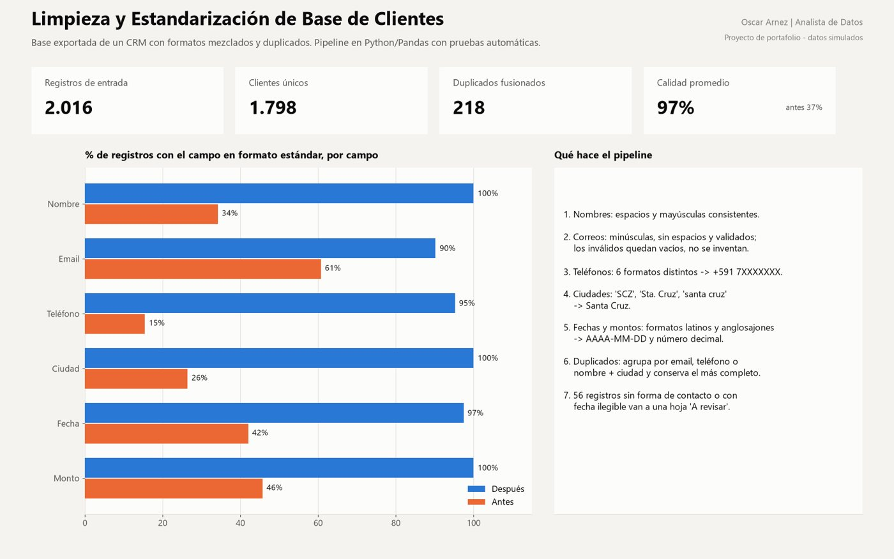

Limpieza y estandarización de una base de clientes
Una base cargada por distintas personas y formularios: teléfonos en seis formatos, ciudades escritas de cinco maneras, montos con coma o punto decimal y el mismo cliente repetido. Armé un pipeline que la deja lista para usar y que se puede volver a correr con la exportación del mes siguiente.

Contexto
Es el pedido más común que veo en proyectos freelance: una empresa quiere hacer una campaña, migrar a otro CRM o simplemente contar cuántos clientes tiene, y la base no lo permite. Arreglarla a mano en Excel funciona una vez, pero el mes siguiente llega otra exportación con los mismos problemas.
Por eso lo resolví como un pipeline: cada regla de limpieza es una función de Python con pruebas, y el proceso completo se ejecuta con un comando.
Datos
2.016 registros con nombre, correo, teléfono, ciudad, fecha de registro y monto de compras. La base se generó por simulación con 1.800 clientes distintos más 216 duplicados con variaciones, para poder medir si el pipeline encuentra exactamente a los clientes que existen.
Qué hice
- Estandaricé cada campo: nombres con mayúsculas consistentes, correos en minúscula y validados, teléfonos al formato +591 7XXXXXXX, ciudades contra un catálogo, fechas a AAAA-MM-DD y montos a número decimal.
- Si un valor no se puede interpretar, queda vacío. El pipeline no completa datos que no estaban.
- Detecté duplicados con union-find: dos registros son el mismo cliente si comparten correo, teléfono o nombre y ciudad, aunque el vínculo sea indirecto.
- De cada grupo conservé el registro más completo y rellené sus vacíos con los datos de los duplicados.
- Separé en una hoja aparte los 56 clientes sin contacto válido o con fecha ilegible, para que los revise una persona.
Resultados
| Registros de entrada | 2.016 |
|---|---|
| Clientes únicos | 1.798 |
| Duplicados fusionados | 218 |
| Campos en formato estándar, antes | 37 % |
| Campos en formato estándar, después | 97 % |
| Pruebas automáticas | 37 |
Qué recomendaría
- El pipeline encontró 1.798 de los 1.800 clientes. Las 2 fusiones de más son clientes distintos que en la simulación recibieron el mismo correo, el mismo criterio que usaría un CRM.
- Lo que falta para llegar al 100 % en correo y teléfono son datos que venían vacíos o inválidos de origen. Quedan señalados, no inventados.
Extracto del código
src/limpieza.py
def normalizar_telefono(valor):
"""Cualquier formato de celular boliviano -> '+591 7XXXXXXX'."""
if _vacio(valor):
return None
dig = re.sub(r"\D", "", str(valor))
if len(dig) == 11 and dig.startswith("591"):
dig = dig[3:]
if len(dig) == 8 and dig[0] in "67":
return f"+591 {dig}"
return NoneVer el proyecto completo en GitHub, con instrucciones para ejecutarlo.